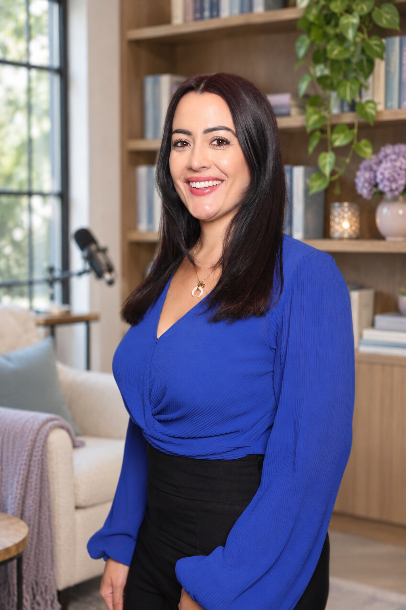

Habita tu verdad.
Crea tu próxima etapa.
Una vida con más conciencia. Decisiones con más claridad. Encuentra el espacio que acompaña tu próxima etapa.
Un camino que sigue creciendo.
Negocios, conciencia.
Una misma esencia.
Soy Carolina Gómez: colombiana, mamá y una mujer que cree en construir una vida auténtica. Desde 2007 trabajo en ventas y estrategia de negocios.
Mi propio despertar me enseñó a integrar los negocios, la espiritualidad y la conciencia. Hoy acompaño a las personas a mirar sus patrones, elegir con intención y dar su próximo paso, por dentro y por fuera.

de Eso.
Hay cosas que cambian
cuando las hablamos.
Historias reales, emociones y conversaciones que nos invitan a cuestionar lo aprendido. Mi voz y mi historia siguen aquí: Hablemos de Eso, por YoSoyCaroluna.
Escuchar en SpotifyTu próxima etapa
también puede tener dirección.
Comprar, vender o invertir también es una decisión de vida. Te acompaño con estrategia, información clara y honestidad para que des tu próximo paso con confianza.